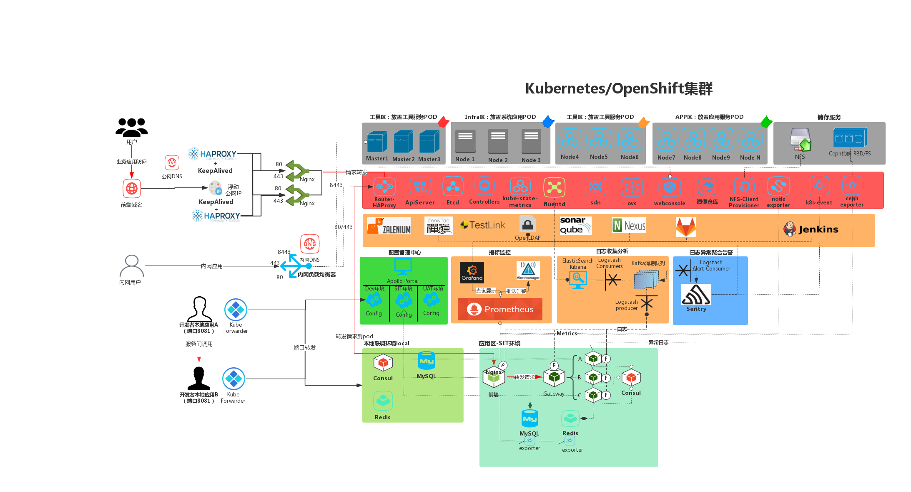
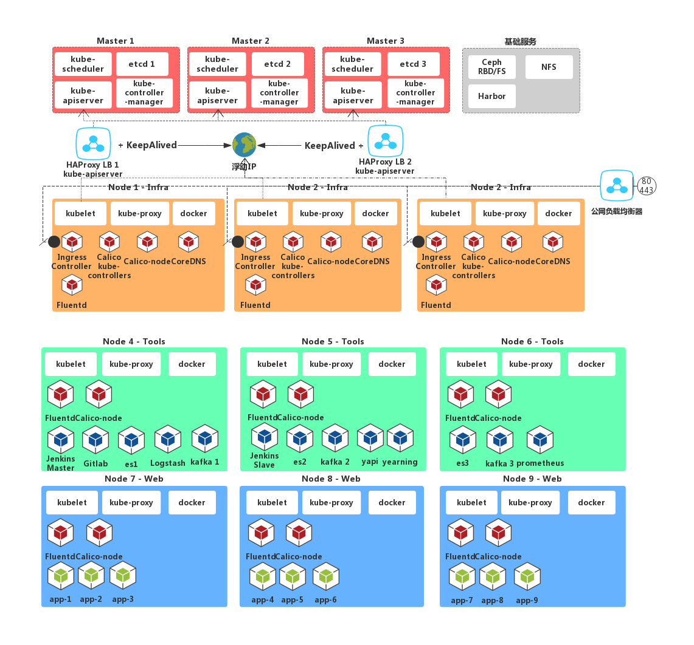
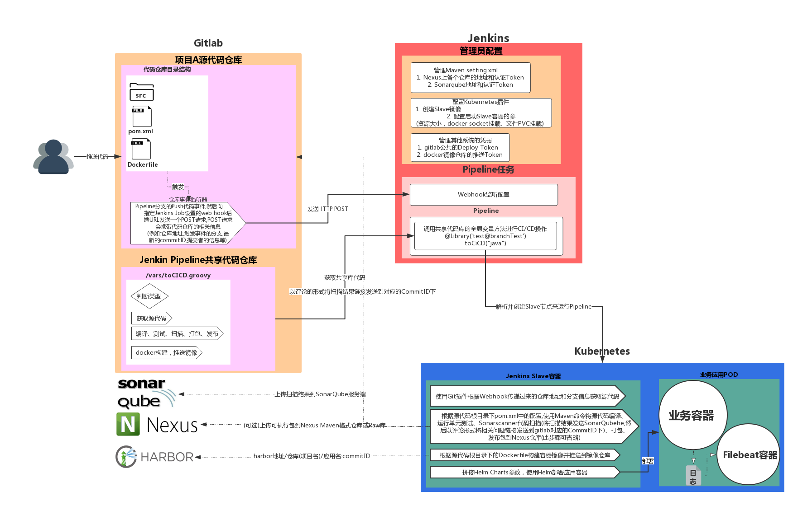
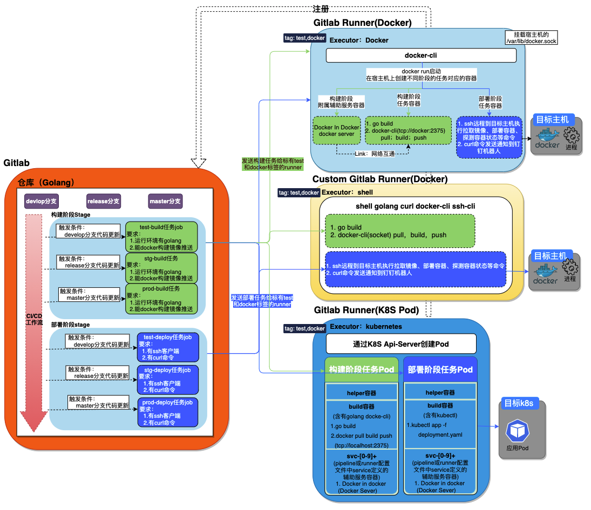
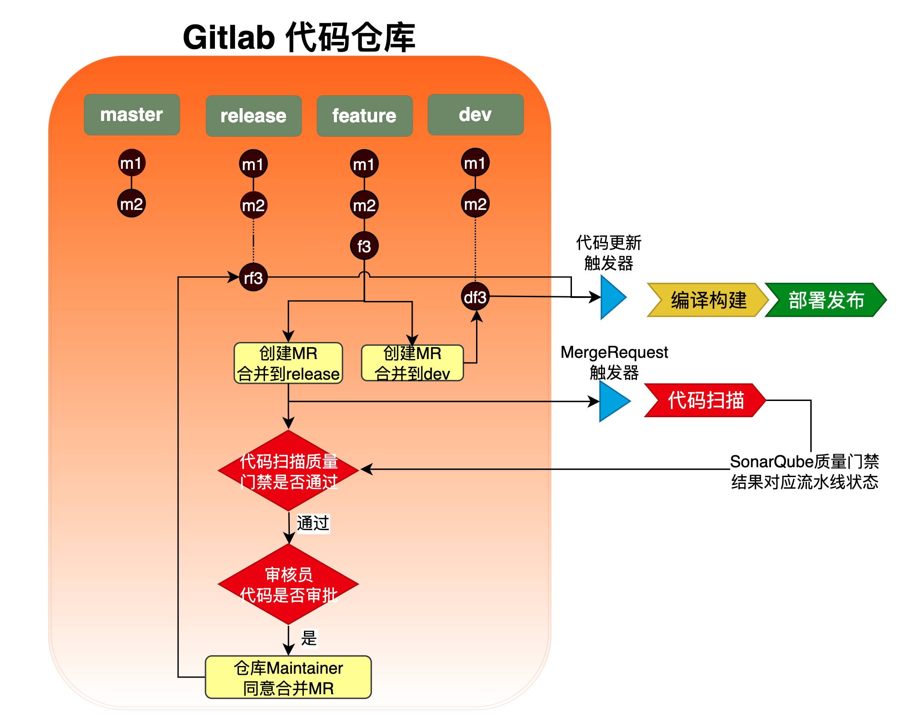
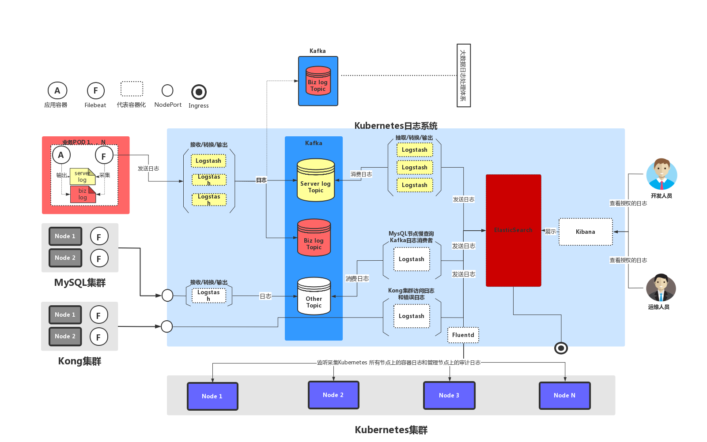
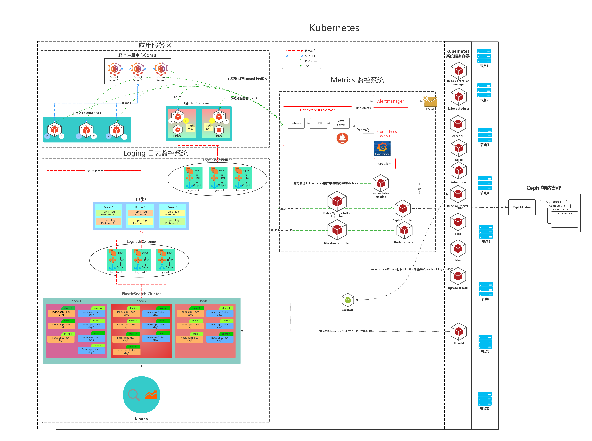

Curiouser's Devops Roadmap
This gitbook record the technical roadmap of Devops Curiouser.
Link
GitBook Access URL: https://gitbook.curiouser.top
GitHub: https://github.com/Curiouserw
What I had done at Openshift or Kubernetes

Database Connect Secrity
JumpServer结合VaultServer实现隔离数据库直连、自动生成有效期数据库账号
sequenceDiagram
participant dev as 开发者
participant lb as 负载均衡器
participant J as JumpServer
participant ecs as 服务器
participant v as VaultServer
participant L as 审批流程
participant db as 数据库
rect rgba(0, 255, 0,.1)
Note over J: 运维：添加开发者可使用的服务器信息
dev ->> L: ①邮件申请(邮件参照以下模板)
L -->> L: ②审批结果
v -->> v: ③使用Vault创建申请数据库的临时账号
v -->> db: Vault根据模板SQL自动创建临时账号，<br/>并管理该账号的有效期,到期自动删除临时账号
J -->> J: ④运维：授予开发Jumpserver账号申请服务器的登录访问权限
L -->> dev: ⑤运维回复邮件：包含数据库临时账号密码和Jumpserver用户名密码
end
dev ->> lb : ⑥使用JumpServer账号登录
lb -->> J:
alt web页面登录服务器
activate dev
J ->> ecs : ⑦web cli登录服务器
activate ecs
ecs ->> ecs: ⑧开发者: 在服务器上部署报表程序代码及配置
deactivate ecs
ecs ->> + db: ⑨报表程序连接数据库
activate ecs
ecs ->> ecs: 报表程序完成运行
deactivate ecs
deactivate dev
else SSH客户端登录服务器
activate dev
dev ->> lb : ⑦ssh -p负载均衡器监听转发至JumpserverSSH的端口 JumpServer用户名@JumpServer的域名
lb -->> J: 连接转发至JumpServer k8s NodePort
J ->> ecs: 登录服务器
activate ecs
ecs ->> ecs: ⑧开发者: 在服务器上部署报表程序代码及配置
deactivate ecs
ecs ->> + db: ⑨报表程序连接数据库
activate ecs
ecs ->> ecs: 报表程序完成运行
deactivate ecs
deactivate dev
end
v -->> db: Vault自动回收删除到期数据库账号
J-->> J : JumpServer自动注销到期账号ECS登录会话
JumpServer使用自带数据库应用功能，实现隔离数据库直连、自动生成临时有效期数据库账号
sequenceDiagram
participant dev as 开发者
participant lb as 负载均衡器
participant J as JumpServer
participant L as 审批流程
participant db as 数据库
rect rgba(0, 255, 0,.1)
dev -->> L: ①邮件申请(邮件参照以下模板)
L -->> L: 审批
db-->> db: ②运维：无现成权限的账号则生成新的
J -->> J: ③运维：<br>1：保存数据库账号和密码 <br>2：Jumpserver账号新增或授权
L -->> dev: ④运维回复邮件，新增Jumpserver账号则回复Jumpserver的用户名密码。只授权则回复“已授权”
end
dev ->> lb: ⑤JumpServer账号登录
lb -->> J:
alt Web页面直接连接
activate J
J ->> db: ⑥JumpServer Web页面直接连接数据库
deactivate J
activate dev
dev ->> dev: ⑦问题排查
deactivate dev
else 客户端工具连接
Note over J: JumpServer页面显示：<br>1:数据库临时账号<br>2:数据库临时密码<br>3:负载均衡器域名<br>4:负载均衡器MySQL转发端口
activate dev
Note over dev: Navicat、MySQL CLI等工具
dev ->> lb: ⑥客户端工具使用JumpServer页面显示的信息连接
activate lb
lb -->> J: 连接转发至JumpServer k8s NodePort
deactivate lb
activate J
J ->> db: 连接数据库
deactivate J
activate dev
dev ->> dev: ⑦问题排查
deactivate dev
deactivate dev
end
kubernetes

Jenkins CI/CD Flow
1. Gitlab Webhook + Jenkins SharedLibraries/Kubernetes + SonarScanner Maven Plugin

Gitlab CI/CD Workflow

1、Trigger pipeline to Scan code when create a MergeRequest

Logging

Logging与Metrics
